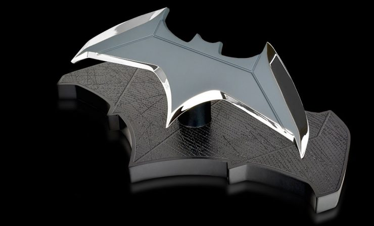

Welcome to "The Dark Knight Rises: A Tribute to Batman." In the chronicles
of pop culture history, few figures loom as large or strike as much fear
into the hearts of criminals as the legendary Batman. This iconic
superhero has captivated audiences for generations with his brooding
demeanor, indomitable spirit, and unwavering commitment to justice.
Throughout this tribute, we will delve into the rich tapestry of Batman's
mythology, tracing his journey from the shadows of Gotham City to the
pinnacle of superheroic excellence. Join us as we explore the timeless
legacy of the Caped Crusader, celebrating his triumphs, unraveling his
mysteries, and paying homage to the enduring symbol of hope he represents.
Prepare to be immersed,
"In a world of darkness and light, where justice is a never-ending battle
and the night belongs to the one they call...
Batman."
Rise of the Dark Knight:
|
|
The Joker's Reign of Chaos:
|
|
The Dark Knight's Sacrifice:
|
Born into privilege and tragedy, Bruce Wayne's life took a drastic turn
the night his parents, Thomas and Martha Wayne, were brutally murdered in
front of him in the streets of Gotham City. This traumatic event would
shape the course of his life, driving him to become the masked vigilante
known as Batman. Haunted by the memory of his parents' deaths and fueled
by a deep-seated desire for justice, Bruce dedicated himself to a lifelong
crusade against crime and corruption in Gotham. He vowed to strike fear
into the hearts of criminals, using the symbol of a bat to embody the
darkness that lurked within him.
To prepare for his mission, Bruce embarked on a journey of self-discovery
and self-mastery, traveling the world and honing his mind, body, and
spirit. Under the guidance of mentors like Henri Ducard and Ra's al Ghul,
he trained in various martial arts disciplines, mastered detective skills,
and acquired vast knowledge in science and technology.
Upon his return to Gotham, Bruce assumed the persona of a carefree
billionaire playboy, using his family's wealth and resources to fund his
crime-fighting activities. By day, he maintained the facade of a
superficial socialite, while by night, he donned the iconic cape and cowl
of Batman, patrolling the city's shadowy streets and rooftops.
As Batman, Bruce operated outside the boundaries of the law, utilizing
fear, intimidation, and stealth to combat the city's most notorious
criminals. With his keen intellect, strategic planning, and arsenal of
high-tech gadgets, he became a symbol of hope for the citizens of Gotham,
inspiring fear in the hearts of evildoers. Throughout his career, Batman
has faced numerous adversaries, from street-level thugs to deranged
supervillains, each posing a unique challenge to his resolve and
determination. From the enigmatic Joker to the seductive Catwoman,
Batman's rogues' gallery reflects the dark and twisted nature of Gotham
itself.
Despite the toll that his dual identity takes on his personal life and
relationships, Bruce Wayne remains steadfast in his commitment to
protecting the innocent and upholding justice. His unwavering resolve,
iron will, and unyielding sense of morality make him not just a hero, but
a legend in the annals of superhero history.
As Gotham's dark knight, Batman continues to inspire fear in the hearts of
criminals and hope in the hearts of the downtrodden, reminding us all that
even in the face of adversity, true heroism can shine through.
|
|
|  | |
The Bat-Signal, a powerful symbol of hope and justice, casts its iconic silhouette against the night sky of Gotham City, serving as a beacon for those in need of the Dark Knight's protection. Consisting of a large spotlight adorned with the distinctive bat emblem, the Bat-Signal is Commissioner Gordon's direct line of communication with Batman, summoning him to action whenever danger looms over the city. Its piercing light cuts through the darkness, signaling Batman's unwavering commitment to defending the innocent and combating the forces of evil. More than just a practical tool, the Bat-Signal embodies the enduring legacy of Batman, inspiring citizens to believe in the triumph of good over evil and the promise of a safer, brighter future for Gotham.
As we reach the end of our tribute to Batman, let us reflect on the enduring legacy of the Dark Knight and the impact he has had on popular culture and the lives of fans around the world. From his humble beginnings in the pages of comic books to his evolution into a global icon, Batman has inspired generations with his resilience, determination, and unwavering commitment to justice. As we celebrate Batman's timeless legacy, let us carry forward his spirit of heroism and continue to find inspiration in his example. Join us in honoring the Dark Knight's legacy by exploring more about Batman's universe, connecting with fellow fans, and embracing the values of courage, compassion, and perseverance that he embodies. Together, let us keep the bat-signal shining bright and continue to believe in the power of heroism to make the world a better place.